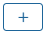
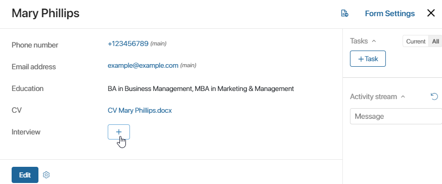
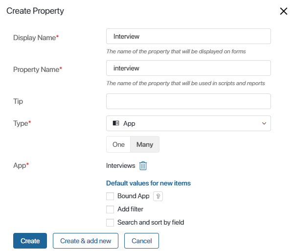
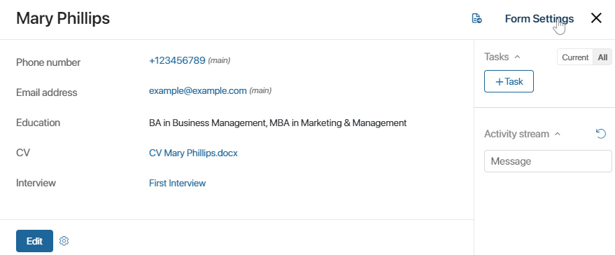
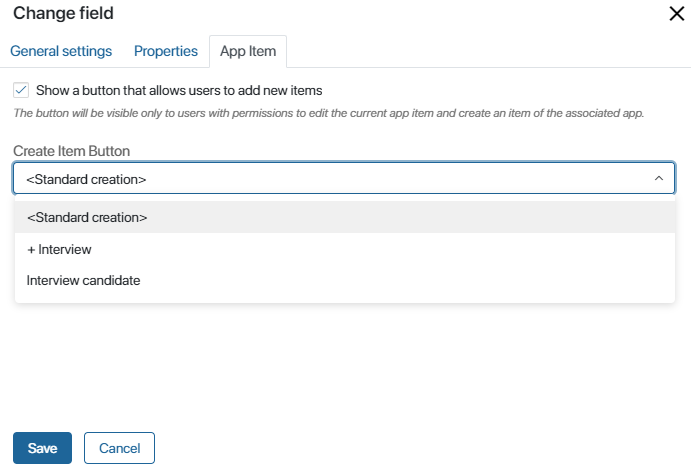
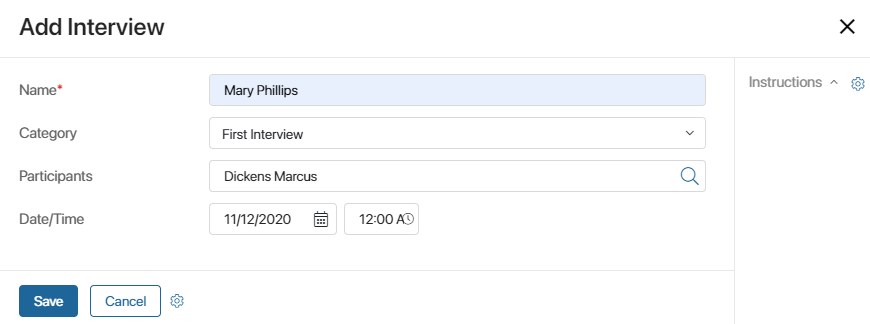
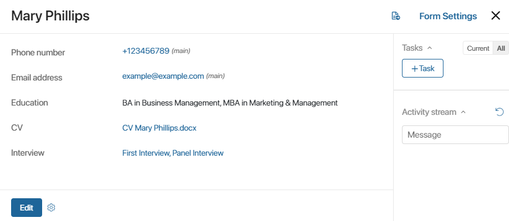
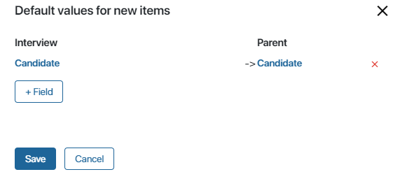
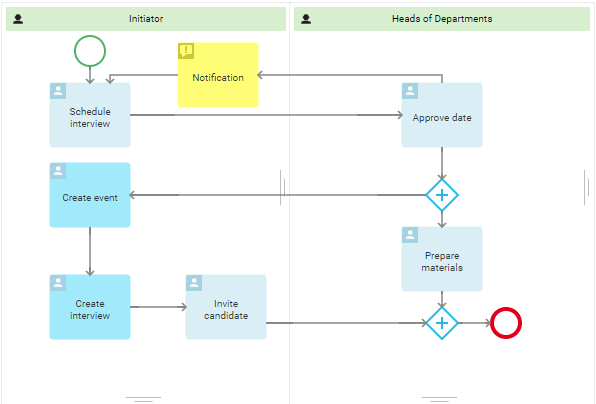

On the app form, a field with a link to another app can be added. For example, by placing a link to the Supplemental Agreements app on the form of the Contracts app, you will be able to create new supplemental agreements directly from a contract page.
Consider another example. The HR department uses the CV and Interviews apps for working with candidates. A recruiter can open a CV and immediately arrange an interview with the candidate. He or she would only need to click the  button on the CV page instead of going to the Interviews app.

The new interview entry will appear both on the CV page and in the Interviews app.
Add a link to an app
Let’s use the example above to see in more detail how to work with linked apps.
To the form of the CVs app, add an App field and select the Interviews app in the field's settings.
Since we want users to be able to add several interviews to the page of one CV, we need to select Many in the CV property’s settings. Otherwise, users will only be able to add one interview.
Please note that if the Bound apps setting is enabled, the add button will be unavailable.

To learn more, see App item form and System data types.
Once the form is configured and saved, users will be able to create new interviews directly on CV’ pages.
начало внимание
The add button is only available to those users who have the permissions to view or edit the current app item and to create items of the associated app. These settings need to be set for app items.
конец внимание
Set up the add button
In the button settings, you can:
- Hide the button if you don’t need to create items from the page.
- Change the way of adding items.
Based on the same example, let’s see how to change the settings of the add button. Open the view form of the CV app and switch to the Advanced Mode. It is impossible to configure the add button in the standard mode.

Open the View tab and click Interview in the list of properties.
In the window that opens, go to the App Item tab.

- Show a button that allows users to add new items. Uncheck the box to hide the add button from the view form.
- Create Item Button. Select how a new item needs to be added. In our example, three options are available: <Standard creation>, + Interview, and Interview candidate.
Let’s take a closer look at these options .
- <Standard creation>. This is the default option that is not related to the particular app settings. When a user clicks the button, a standard window for creating a new interview opens.

The user manually fills out the fields, and the interview is added both to the Interviews app and to the CV view page.

- + Interview. This option works the same way as the button for creating app items located on the app page. It is very useful if you have configured default values for new items. In this case, some fields will be prefilled, so work will go faster and with fewer mistakes.
Let’s say that there is a Candidate field in the Interviews app. You can change the settings so that it is filled out automatically with the candidate’s name taken from the CV.

Read more about automatically prefilled fields in the Default values for new items article.
- Interview candidate. The option allows you to run by button a business process created at the level of the app to which the item is added. The process will appear in the list if a button to run it from the app page has been added. The name of the option in the settings corresponds to the name of the process.
To have an app item added at runtime, include the Create App Item activity.
For example, the Interviews app is configured with the Interview candidate process. In this process, an HR employee sets a date for the interview, the department manager confirms the date. The supervisor then receives a task Prepare a test case and the interview is added to the calendar.

A new item is then created and added to both the Interviews app and the CV page from which the process was run.
Found a typo? Select it and press Ctrl+Enter to send us feedback